Casa Costanera
Casa Costanera es el mall boutique referente en el sector oriente de Santiago, Chile. Plant Art optimizó el paisajismo existente de Casa Costanera mediante una lectura técnica del activo, recuperación de especies y criterios de mantención que complementan su diseño mediterráneo. La operación se mantiene bajo estándares de alta exigencia.
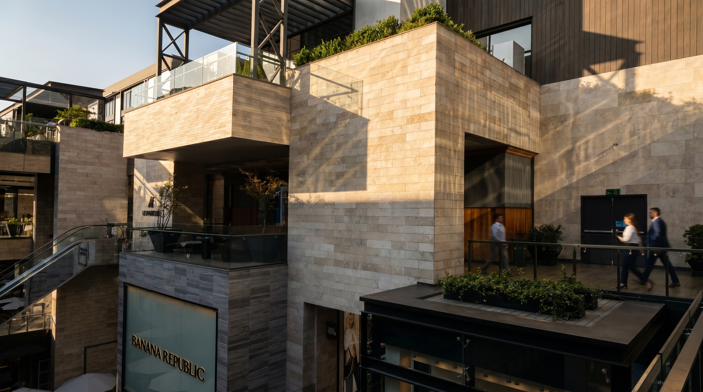
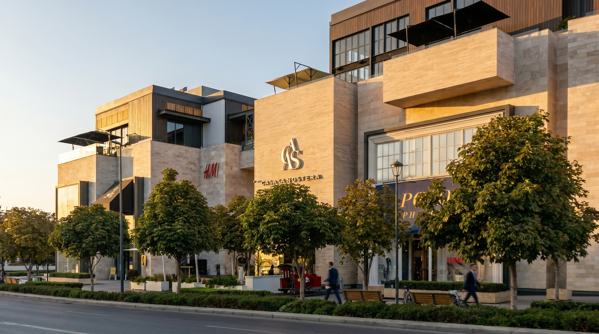
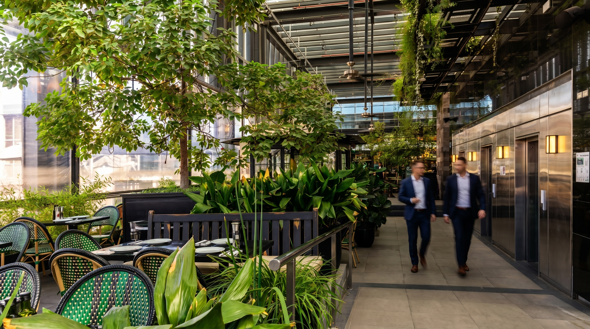
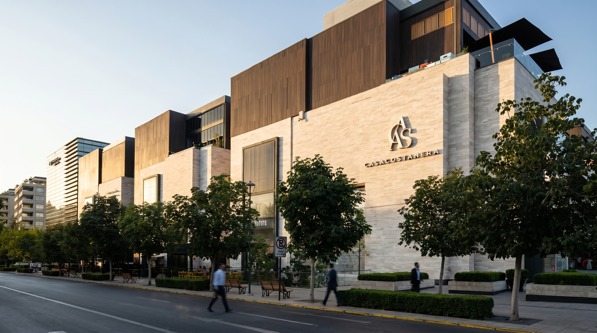
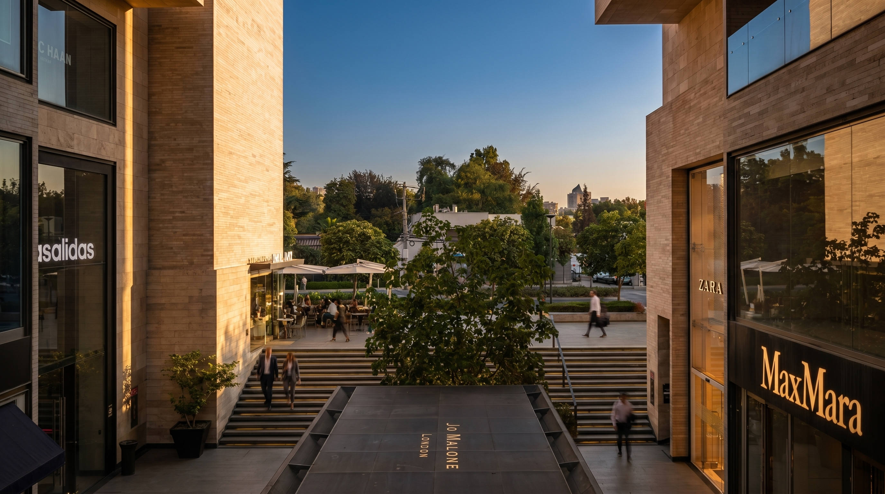
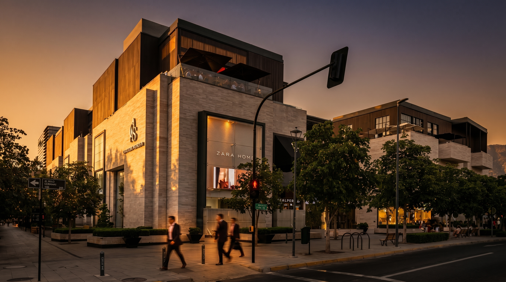
En un entorno de retail boutique, el paisajismo debe sostener una lectura impecable durante toda la operación. El desafío consiste en recuperar especies con bajo desempeño y corregir causas raíz, desde sustratos y exposición lumínica hasta riego y fitosanidad, sin interrumpir la experiencia del mall.
Plant Art desarrolló un análisis técnico exhaustivo del paisaje existente, identificando especies fuera de microclima, sustratos compactados, necesidades de riego y puntos de recuperación vegetal. Desde esa lectura se ajustó la paleta botánica para reforzar el carácter mediterráneo del proyecto, con mantención preventiva y seguimiento fitosanitario que sostienen el estándar visual sin alterar la operación diaria.
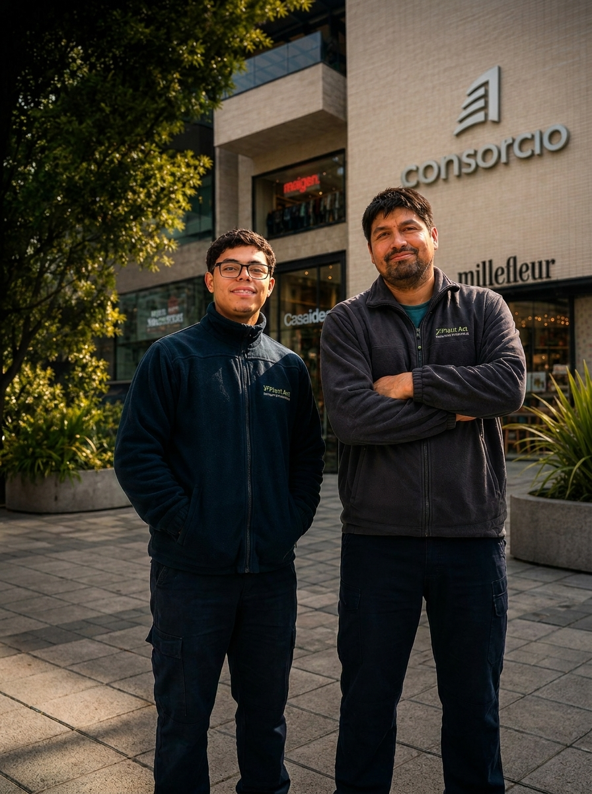
"Continuidad visual impecable en el mall boutique referente de Santiago."
Casa Costanera — Optimización y mantención paisajística. Plant Art.
Archivo fotográfico
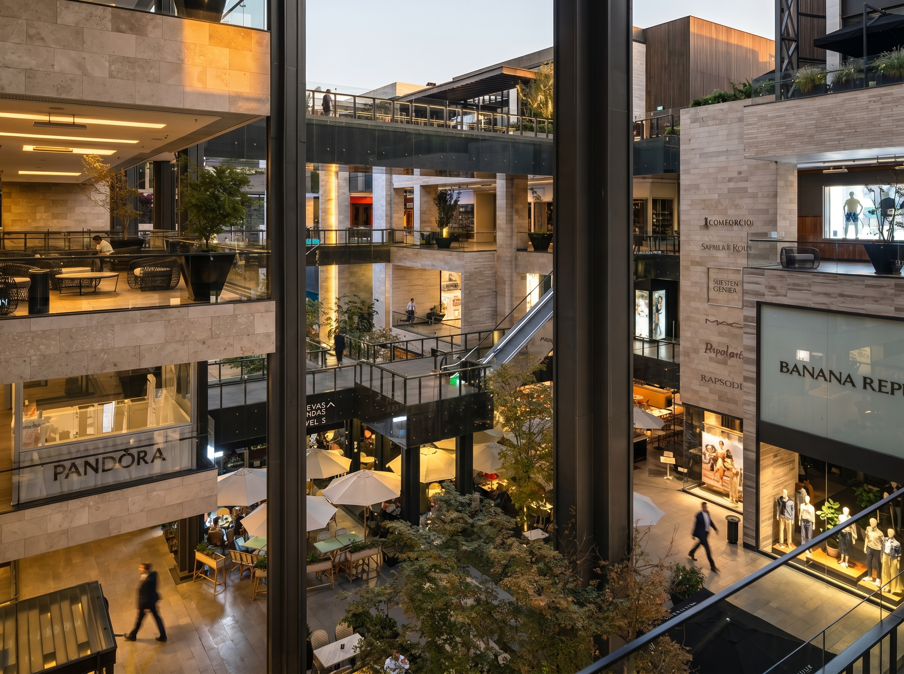
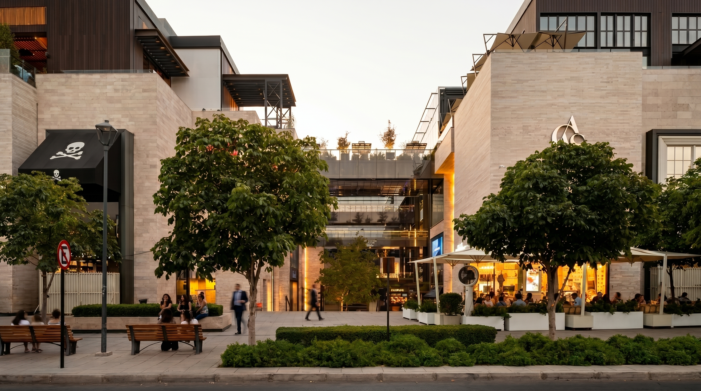
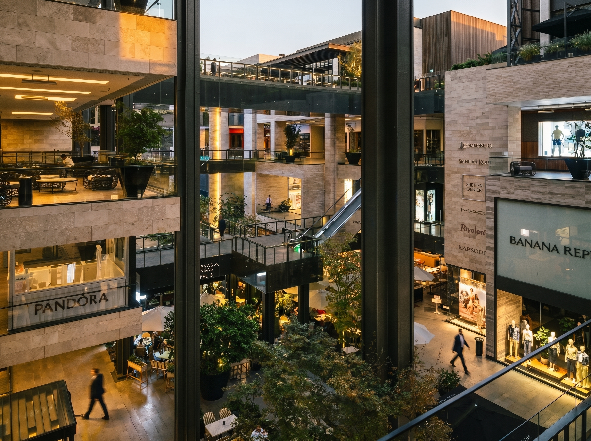
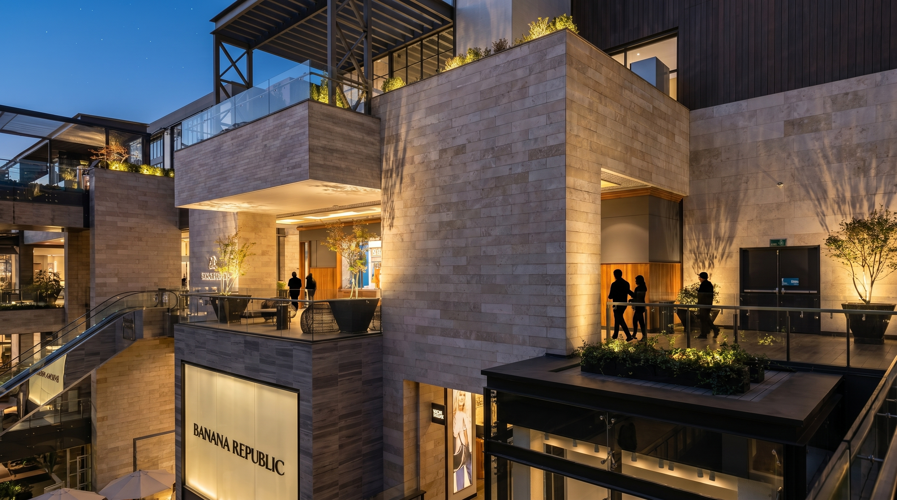
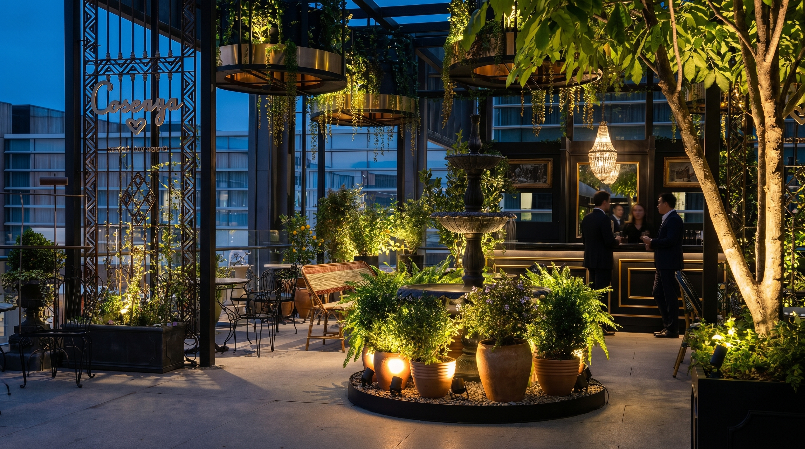
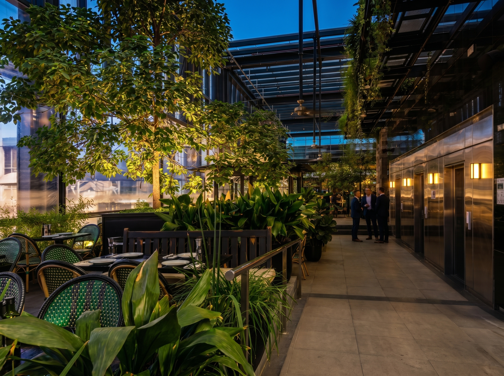
Solicitar evaluación para tu activo.
En 48 horas tienes una evaluación técnica sin costo.